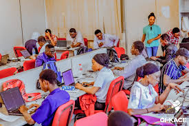
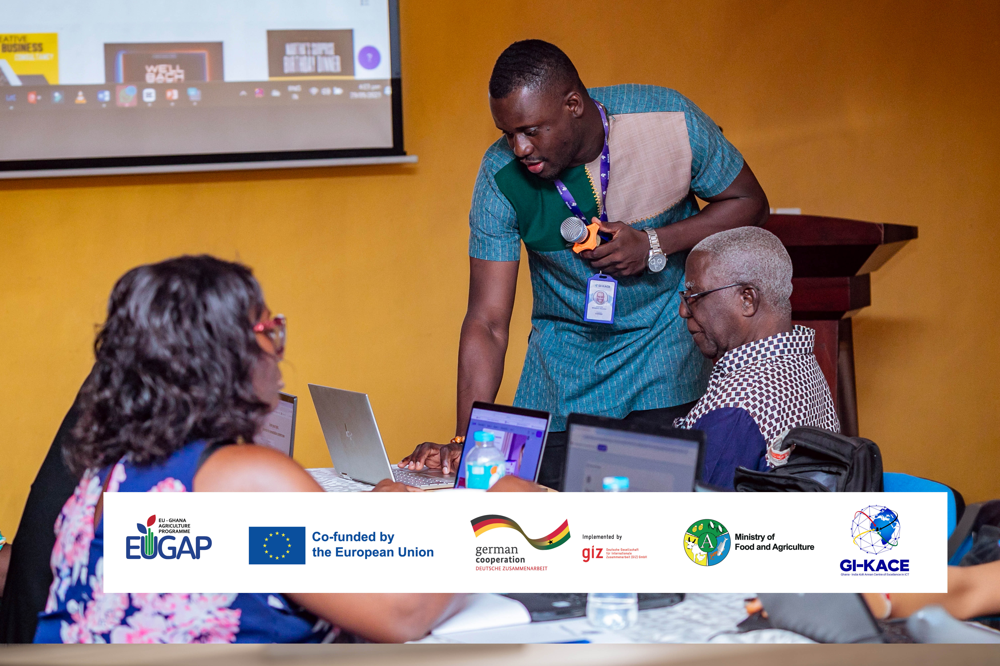

Your future starts here. Discover our mission and services today.
Inquire NowThe vision statement of GI-KACE is: “To be a Premier Centre of Excellence in Information and Communication Technology for Africa.” The Centre is Ghana's first Advanced Information Technology Institute which works to stimulate the growth of the ICT Sector in ECOWAS. Established in 2003, through a partnership between the Government of Ghana and the Government of India, this state-of-the-art facility provides a dynamic environment for innovation, teaching and learning as well as practical research on the application of ICT4D in Africa. GI-KACE has a world of professionals who are committed to the free flow of knowledge and the use of technology to develop human resources required for the development of Ghana and Africa through ICT training. With a staff of about 35 from diverse ethnic and cultural backgrounds, AITI is made up of a dynamic team of dedicated IT professionals with a wide range of technological skills and expertise. We provide equal opportunities irrespective of gender and it must be noted that projects such as i2Cap and Project Kane, a youth-driven project using ICT as an innovating tool in education to name a few, were coordinated by women. GI-KACE as an ICT training centre has mastered the art of training students in software development as a composite process involving planning, implementation, testing, deployment and maintenance. GI-KACE believes in one size does-not-fit-all approach to software development training.

General Professional Courses
Community OutreachUpper East, Bolgatanga-Adjucent High Court
Website: http://www.gi-kace.gov.gh
PhoneNo: 055 666 0355
Industry: IT Service and IT Consulting
Headquarters: Ridge, Accra